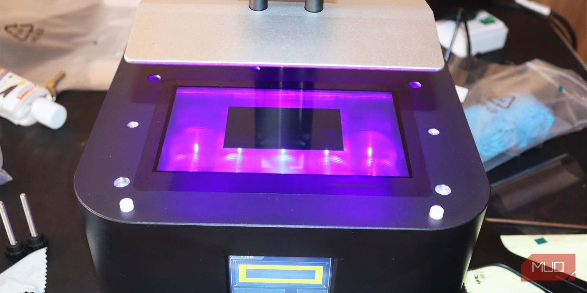
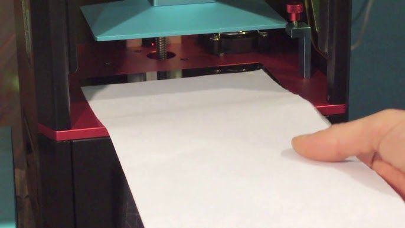
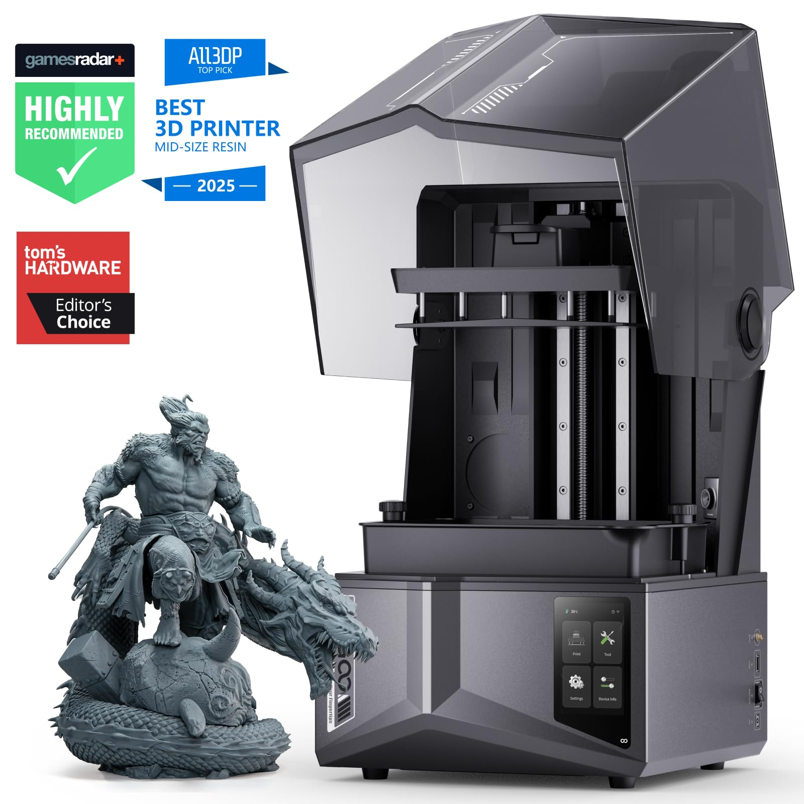

📋 Por que o Nivelamento é Crucial em Impressoras de Resina?
O nivelamento correto da plataforma de construção é o fundamento de toda impressão 3D de resina bem-sucedida. Diferente das impressoras FDM, nas impressoras de resina LCD/SLA/DLP a plataforma desce e pressiona contra a tela LCD, onde a luz UV cura a resina camada por camada. Uma plataforma mal nivelada resulta em falhas de adesão, peças incompletas, desperdício de resina e tempo perdido. Este guia detalhado vai te ensinar o processo completo, passo a passo, com fotos ilustrativas para garantir impressões perfeitas!
⚠️ ATENÇÃO IMPORTANTE
Um nivelamento incorreto é a causa número 1 de falhas em impressões de resina. Dedique tempo e atenção a este processo. Refaça o nivelamento a cada 10-15 impressões ou sempre que notar problemas de adesão! A tela LCD é delicada - nunca pressione com força excessiva!
🛠️ Materiais Necessários
- 1 folha de papel sulfite A4 (75-90g/m²)
- Chave Allen (geralmente fornecida com a impressora)
- Pano de microfibra ou papel toalha
- Álcool isopropílico 99% (para limpeza)
- Luvas descartáveis de nitrilo
- Boa iluminação
Preparação e Limpeza da Tela LCD
Antes de iniciar o nivelamento, é fundamental preparar adequadamente a impressora de resina:
- Desligue a impressora e remova o tanque de resina (VAT) com cuidado - nunca nivele com resina dentro!
- Limpe a tela LCD com álcool isopropílico e pano de microfibra - remova qualquer resíduo de resina curada ou marcas de dedo
- Limpe a plataforma de construção com álcool isopropílico - certifique-se de que está completamente seca e livre de resina
- Verifique se não há resina curada na superfície da tela ou na plataforma - qualquer resíduo compromete o nivelamento
- Ligue a impressora após a limpeza completa
💡 Dica Profissional
Use sempre luvas ao manusear resina, mesmo curada. A tela LCD é extremamente delicada - nunca use objetos pontiagudos, abrasivos ou pressione com força. Pressione suavemente com o pano de microfibra em movimentos circulares.
Soltar os Parafusos da Plataforma de Construção

A plataforma de construção das impressoras de resina possui parafusos que permitem o ajuste fino do nivelamento:
- Localize os parafusos - geralmente são 4 parafusos nas laterais ou na parte superior da plataforma de construção
- Use a chave Allen apropriada fornecida com sua impressora (geralmente 2.5mm ou 3mm)
- Afrouxe os parafusos em sentido anti-horário - não remova completamente, apenas solte o suficiente para a plataforma ter uma leve folga
- Verifique o movimento - a plataforma deve ter uma leve folga para ajuste, mas não deve estar completamente solta
⚠️ CUIDADO
Não solte demais os parafusos! Eles devem estar apenas levemente frouxos. Se soltar muito, a plataforma pode cair ou desalinhar completamente durante o processo de nivelamento.
Posicionar o Papel e Executar "Home" ou "Z=0"

O papel sulfite funciona como um calibrador de espessura preciso para impressoras de resina:
- Pegue uma folha de papel sulfite A4 comum (75-90g/m²) - não use papel muito fino ou muito grosso
- Dobre o papel ao meio UMA VEZ - isso cria uma espessura de aproximadamente 0.2mm, ideal para impressoras de resina LCD
- Coloque o papel dobrado no centro da tela LCD, sobre a área de impressão - certifique-se de que está bem posicionado
- Acesse o menu da impressora e procure pela opção "Tools", "Ferramentas" ou "Manutenção"
- Selecione "Home", "Z=0" ou "Set Home" - isso fará a plataforma descer até a posição inicial (Z zero)
- Aguarde a plataforma descer completamente e pressionar o papel contra a tela LCD
💡 Dica Profissional
Para impressoras de resina, use o papel dobrado APENAS UMA VEZ (não duas como em FDM). A distância entre a plataforma e a tela deve ser mínima para garantir boa adesão. Use sempre papel sulfite novo e limpo - papel usado ou amassado compromete a precisão!
Ajuste Fino da Pressão sobre a Tela LCD
Este é o momento crítico do nivelamento - o ajuste da pressão correta sobre a tela LCD:
- Com a plataforma pressionando o papel contra a tela LCD, tente puxar o papel suavemente
- Pressão ideal: O papel deve estar bem preso, com resistência moderada ao puxar - você deve sentir fricção mas conseguir puxar com esforço
- Se o papel sair muito fácil: A plataforma está muito alta - a impressão não vai aderir. Pressione levemente a plataforma para baixo
- Se o papel não sair de jeito nenhum ou rasgar: A plataforma está muito baixa - risco de danificar a tela LCD! Levante ligeiramente
- Teste em diferentes pontos: Puxe o papel no centro, nas bordas e nos cantos para garantir uniformidade em toda a tela
- Ajuste fino: Se necessário, levante a plataforma, reposicione o papel e execute "Home" novamente até encontrar a pressão perfeita
❌ Erros Comuns em Impressoras de Resina
Muito apertado: Pode danificar permanentemente a tela LCD (cara para substituir!) e causar problemas de separação das camadas.
Muito solto: Peças não aderem à plataforma e ficam grudadas na tela LCD ou no filme FEP do tanque.
Apertar os Parafusos em Padrão de Cruz

Após encontrar a pressão ideal, é hora de fixar a plataforma de construção:
- Mantenha a pressão na plataforma enquanto aperta os parafusos - não deixe a plataforma se mover
- Aperte em padrão de cruz: Primeiro um parafuso, depois o oposto diagonalmente - isso garante nivelamento uniforme
- Aperte gradualmente: Não aperte um parafuso completamente de uma vez - alterne entre eles em pequenos incrementos
- Aperto firme mas não excessivo: Os parafusos devem estar bem fixos, mas sem força exagerada que possa entortar a plataforma
- ANTES de remover o papel: Verifique se todos os parafusos estão bem apertados e a plataforma não se move
⚠️ IMPORTANTE
Apertar os parafusos de forma desigual pode desalinhar a plataforma! Sempre use o padrão em cruz e aperte gradualmente todos os parafusos. Um lado mais apertado que o outro causa falhas de adesão parcial.
Teste Final e Verificação do Nivelamento
Após apertar todos os parafusos, faça a verificação final do nivelamento:
- Remova o papel cuidadosamente puxando-o para fora sem forçar a plataforma
- Levante a plataforma usando o menu da impressora (Move Z Up ou subir eixo Z)
- Recoloque o papel na tela LCD e execute "Home" ou "Z=0" novamente
- Teste a resistência: O papel deve ter exatamente a mesma resistência de antes do aperto dos parafusos
- Se a resistência mudou: Os parafusos alteraram o nivelamento - repita todo o processo desde o passo 2
- Se está igual: Parabéns! Seu nivelamento está perfeito e pronto para imprimir!
💡 Dica Profissional
Faça SEMPRE este teste de verificação! É extremamente comum o nivelamento mudar ligeiramente ao apertar os parafusos em impressoras de resina. Melhor gastar 2 minutos verificando do que perder horas com impressões falhadas e resina desperdiçada.
Finalização e Primeira Impressão de Teste
Com o nivelamento concluído, prepare-se para sua primeira impressão:
- Remova o papel completamente da tela LCD - não deixe resíduos
- Limpe a tela novamente com álcool isopropílico para remover qualquer marca de dedo ou resíduo do papel
- Recoloque o tanque de resina (VAT) com cuidado, certificando-se de que está bem encaixado e nivelado
- Verifique o filme FEP do tanque - deve estar limpo, transparente e sem rasgos ou resina curada
- Adicione resina ao tanque até o nível recomendado pelo fabricante (geralmente entre as marcas MIN e MAX)
- Execute um teste de impressão: Imprima um cubo de calibração, torre de exposição ou o arquivo de teste fornecido pelo fabricante
- Observe as primeiras camadas: Elas devem aderir perfeitamente à plataforma sem falhas
💡 Dica Profissional
Sempre faça uma impressão de teste após nivelar! Um pequeno cubo de calibração de 2-3 minutos pode confirmar que tudo está perfeito antes de iniciar impressões longas e complexas. Isso economiza tempo, resina e evita frustrações!
🔧 Solução de Problemas Comuns em Impressoras de Resina
Se você está tendo problemas mesmo após o nivelamento correto, confira estas soluções específicas para impressoras de resina:
❌ Problema: Peça não adere à plataforma de construção
Soluções:
• Refaça o nivelamento com pressão um pouco maior no papel (papel mais preso)
• Limpe a plataforma com álcool e lixe levemente com lixa 220-400 para criar textura
• Aumente o tempo de exposição das camadas base (de 30s para 40-50s)
• Aumente o número de camadas base (de 5 para 8-10 camadas)
• Verifique se a resina não está vencida, muito fria (ideal 20-25°C) ou contaminada
• Agite bem a resina antes de usar - pigmentos podem ter sedimentado
❌ Problema: Peça adere mas fica grudada na tela LCD ou no FEP
Soluções:
• Plataforma muito alta - refaça o nivelamento com mais pressão
• Aumente o tempo de exposição das camadas base
• Aumente a velocidade de elevação (lift speed) para 60-80mm/min
• Aumente a distância de elevação (lift distance) para 6-8mm
• Verifique se o filme FEP não está muito apertado ou muito frouxo
• Limpe o FEP com álcool - resíduos causam adesão excessiva
❌ Problema: Adesão irregular (adere em alguns pontos, falha em outros)
Soluções:
• A plataforma não está nivelada uniformemente - refaça o processo completo
• Teste a resistência do papel em todos os cantos durante o nivelamento
• Verifique se a plataforma não está empenada ou danificada
• Certifique-se de que a tela LCD está perfeitamente limpa e sem resina curada
• Verifique se o eixo Z está lubrificado e se move suavemente
• Teste a tela LCD no menu da impressora - pode haver pixels mortos
❌ Problema: Linhas ou marcas nas primeiras camadas
Soluções:
• Resina curada na tela LCD - limpe completamente com álcool
• Filme FEP arranhado ou com resina curada - substitua o FEP
• Tela LCD danificada - teste no menu e substitua se necessário
• Partículas de resina curada flutuando - filtre a resina antes de usar
💡 Quando Refazer o Nivelamento em Impressoras de Resina
• A cada 10-15 impressões (recomendado)
• Após mover ou transportar a impressora
• Quando notar qualquer problema de adesão
• Após trocar o tanque de resina, filme FEP ou a tela LCD
• Se a impressora ficou muito tempo parada (mais de 1 mês)
• Após quedas de energia durante impressão
• Ao trocar de tipo de resina (flexível, rígida, etc)
Manutenção Preventiva para Impressoras de Resina
Mantenha sua impressora de resina sempre em perfeitas condições:
- Limpeza da tela LCD: Limpe com álcool isopropílico e microfibra após cada impressão - resina curada danifica a tela
- Verificação do filme FEP: Inspecione regularmente se há rasgos, opacidade ou resina curada - substitua quando necessário
- Verificação dos parafusos: Confira se estão firmes antes de cada impressão importante - vibração pode afrouxá-los
- Lubrificação do eixo Z: Lubrifique o trilho linear Z a cada 20-30 impressões com graxa apropriada (PTFE ou lítio)
- Inspeção da tela LCD: Teste regularmente no menu da impressora - pixels mortos aparecem como pontos pretos
- Limpeza da plataforma: Lave com água e sabão após cada impressão, seque bem e passe álcool
- Calibração periódica: Refaça o nivelamento preventivamente a cada 10 impressões, não apenas quando houver problemas
- Ambiente controlado: Mantenha a impressora em local com temperatura estável (20-25°C) e protegida de luz solar direta
- Filtragem da resina: Sempre filtre a resina ao devolver para o frasco - partículas curadas causam falhas
- Proteção da tela: Quando não estiver usando, deixe o tanque de resina instalado para proteger a tela LCD de poeira e luz